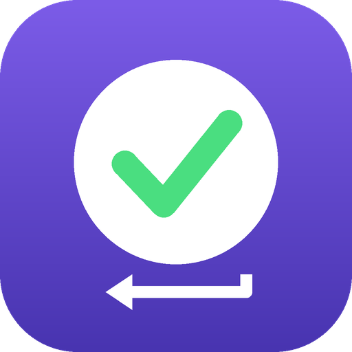

AutoAllow
为你选择的会话自动确认 Claude Code 和 Claude Desktop 的权限提示。
主要功能
- 在命令提示符、PowerShell 和 Windows 终端中确认 Claude Code 的提示
- 在 Claude Desktop 中点击 "Allow once", 只处理你选择的会话
- 可以自动切换到等待确认的后台会话, 确认后再切回
- "只检测不操作"模式, 先预览会确认哪些操作
- 在系统托盘中安静运行
- 完全离线运行, 不收集数据
AI 编程助手工作时, 总要一次次点"是"和"允许"? AutoAllow 帮你省掉这些操作。
选好你信任的 Claude Code 控制台窗口或 Claude Desktop 会话, AutoAllow 就会替你确认它们的权限提示: 在控制台的 "Do you want to proceed?" 提示上按回车, 在 Claude Desktop 中点击 "Allow once"。你没有选择的窗口和会话一律不碰。
如果你开启"检测到等待确认时自动监控" (默认关闭), AutoAllow 也会自动确认你没有手动选择的会话的提示, 开启前会再次向你确认。
所有操作都在你的电脑本地完成, AutoAllow 不联网, 也不收集任何数据。
注意: 确认提示就等于允许助手执行它请求的命令或操作。请只监控你信任其工作内容的会话; 想先看看会确认哪些操作, 可以先用"只检测不操作"模式。
AutoAllow 是独立工具, 与 Anthropic 没有关联, 也未获得其认可。Claude 是 Anthropic 的商标。
联系我们
AutoAllow
針對您選取的工作階段，自動確認 Claude Code 與 Claude Desktop 的權限提示。
主要功能
- 在命令提示字元、PowerShell 和 Windows Terminal 中確認 Claude Code 提示
- 在 Claude Desktop 中點擊 "Allow once"，僅限您選取的工作階段
- 可切換到等待中的背景工作階段，確認後再切換回來
- 僅偵測模式，可預覽哪些內容將被核准
- 在系統匣中安靜執行
- 完全離線運作，不收集資料
AutoAllow 讓您在 AI 程式設計助理工作時，不必再一次又一次地點擊「是」和「允許」。
選好您信任的 Claude Code 主控台視窗或 Claude Desktop 工作階段，AutoAllow 就會替您確認它們的權限提示：在主控台中對 "Do you want to proceed?" 提示按下 Enter，在 Claude Desktop 中點擊 "Allow once"。您沒有選取的視窗和工作階段絕不會被動到。
如果你開啟「偵測到等待確認時自動監控」(預設關閉), AutoAllow 也會自動確認你沒有手動選擇的工作階段的提示, 開啟前會再次向你確認。
一切都在您的電腦本機執行。AutoAllow 不會建立任何網路連線，也不會收集任何資料。
重要：核准提示就等於讓助理執行所要求的命令或動作。請只監控您信任其工作內容的工作階段；若想先看看哪些內容會被核准，請先使用「僅偵測」模式。
AutoAllow 是獨立工具，與 Anthropic 沒有隸屬關係，也未獲其認可。Claude 是 Anthropic 的商標。
聯絡我們
AutoAllow
Automatically confirms Claude Code and Claude Desktop permission prompts for the sessions you choose.
Features
- Confirms Claude Code prompts in Command Prompt, PowerShell and Windows Terminal
- Clicks "Allow once" in Claude Desktop, only for the sessions you select
- Can switch to a waiting background session, confirm it, and switch back
- Detect-only mode to preview what would be approved
- Runs quietly from the system tray
- Works fully offline, no data collection
AutoAllow saves you from clicking "Yes" and "Allow" over and over while an AI coding assistant works.
Pick the Claude Code console windows or Claude Desktop sessions you trust, and AutoAllow confirms their permission prompts for you: it presses Enter on the "Do you want to proceed?" prompt in the console, and clicks "Allow once" in Claude Desktop. Windows and sessions you did not select are never touched.
If you turn on automatic monitoring of waiting prompts (off by default), AutoAllow also confirms prompts in sessions you did not select; it asks you to confirm before turning this on.
Everything runs locally on your computer. AutoAllow makes no network connections and collects no data.
Important: approving a prompt lets the assistant run the requested command or action. Only monitor sessions whose work you trust, and use "Detect only" mode first if you want to see what would be approved.
AutoAllow is an independent tool and is not affiliated with or endorsed by Anthropic. Claude is a trademark of Anthropic.
Contact
AutoAllow
選択したセッションの Claude Code と Claude Desktop の許可プロンプトを自動で確認します。
主な機能
- コマンドプロンプト、PowerShell、Windows Terminal 上の Claude Code のプロンプトを確認
- Claude Desktop で "Allow once" をクリック（選択したセッションのみ）
- 待機中のバックグラウンドセッションに切り替えて確認し、元に戻すことも可能
- 検出のみモードで、承認される内容を事前に確認
- システムトレイで静かに動作
- 完全オフラインで動作し、データは収集しません
AutoAllow は、AI コーディングアシスタントの作業中に「はい」や「許可」を何度もクリックする手間を省きます。
信頼できる Claude Code のコンソールウィンドウや Claude Desktop のセッションを選ぶと、AutoAllow が許可プロンプトを代わりに確認します。コンソールでは "Do you want to proceed?" のプロンプトで Enter キーを押し、Claude Desktop では "Allow once" をクリックします。選択していないウィンドウやセッションには一切触れません。
「確認待ちのプロンプトを自動で監視」をオンにすると (既定はオフ)、手動で選択していないセッションのプロンプトも自動で承認します。オンにする前に確認が表示されます。
すべてお使いのコンピューター上でローカルに動作します。AutoAllow はネットワーク接続を行わず、データも収集しません。
重要：プロンプトを承認すると、アシスタントは要求されたコマンドや操作を実行できるようになります。作業内容を信頼できるセッションだけを監視してください。何が承認されるかを事前に確認したい場合は、まず「検出のみ」モードをお使いください。
AutoAllow は独立したツールであり、Anthropic とは提携しておらず、Anthropic による承認も受けていません。Claude は Anthropic の商標です。
お問い合わせ
AutoAllow
선택한 세션의 Claude Code 및 Claude Desktop 권한 프롬프트를 자동으로 확인합니다.
주요 기능
- 명령 프롬프트, PowerShell, Windows Terminal에서 Claude Code 프롬프트 확인
- Claude Desktop에서 "Allow once" 클릭 (선택한 세션만 해당)
- 대기 중인 백그라운드 세션으로 전환해 확인한 뒤 다시 돌아올 수 있음
- 감지만 모드로 승인될 내용을 미리 확인
- 시스템 트레이에서 조용히 실행
- 완전한 오프라인 동작, 데이터 수집 없음
AutoAllow는 AI 코딩 어시스턴트가 작업하는 동안 "예"와 "허용"을 반복해서 클릭하지 않아도 되게 해 줍니다.
신뢰하는 Claude Code 콘솔 창이나 Claude Desktop 세션을 선택하면 AutoAllow가 권한 프롬프트를 대신 확인합니다. 콘솔에서는 "Do you want to proceed?" 프롬프트에서 Enter를 누르고, Claude Desktop에서는 "Allow once"를 클릭합니다. 선택하지 않은 창과 세션은 절대 건드리지 않습니다.
"확인 대기 중인 프롬프트 자동 모니터링"을 켜면(기본값은 꺼짐) 직접 선택하지 않은 세션의 프롬프트도 자동으로 승인합니다. 켜기 전에 다시 확인을 요청합니다.
모든 작업은 사용자의 컴퓨터에서 로컬로 실행됩니다. AutoAllow는 네트워크에 연결하지 않으며 데이터를 수집하지 않습니다.
중요: 프롬프트를 승인하면 어시스턴트가 요청한 명령이나 작업을 실행할 수 있게 됩니다. 작업 내용을 신뢰할 수 있는 세션만 모니터링하세요. 무엇이 승인될지 먼저 확인하려면 "감지만" 모드를 사용하세요.
AutoAllow는 독립적인 도구이며 Anthropic과 제휴 관계가 아니고 Anthropic의 승인을 받지 않았습니다. Claude는 Anthropic의 상표입니다.
문의
AutoAllow
Bestätigt Berechtigungsabfragen von Claude Code und Claude Desktop automatisch für die Sitzungen, die Sie auswählen.
Funktionen
- Bestätigt Claude Code-Abfragen in Eingabeaufforderung, PowerShell und Windows Terminal
- Klickt in Claude Desktop auf "Allow once", nur für die ausgewählten Sitzungen
- Kann zu einer wartenden Hintergrundsitzung wechseln, bestätigen und zurückwechseln
- Modus "Nur erkennen" als Vorschau, was bestätigt würde
- Läuft unauffällig im Infobereich der Taskleiste
- Arbeitet vollständig offline, keine Datenerhebung
AutoAllow erspart Ihnen das ständige Klicken auf "Yes" und "Allow", während ein KI-Programmierassistent arbeitet.
Wählen Sie die Claude Code-Konsolenfenster oder Claude Desktop-Sitzungen aus, denen Sie vertrauen, und AutoAllow bestätigt deren Berechtigungsabfragen für Sie: Es drückt in der Konsole bei der Abfrage "Do you want to proceed?" die Eingabetaste und klickt in Claude Desktop auf "Allow once". Nicht ausgewählte Fenster und Sitzungen werden nie angetastet.
Wenn Sie die automatische Überwachung wartender Abfragen aktivieren (standardmäßig aus), bestätigt AutoAllow auch Abfragen in Sitzungen, die Sie nicht ausgewählt haben. Vor dem Aktivieren werden Sie um Bestätigung gebeten.
Alles läuft lokal auf Ihrem Computer. AutoAllow stellt keine Netzwerkverbindungen her und erhebt keine Daten.
Wichtig: Das Bestätigen einer Abfrage erlaubt dem Assistenten, den angeforderten Befehl oder die angeforderte Aktion auszuführen. Überwachen Sie nur Sitzungen, deren Arbeit Sie vertrauen, und nutzen Sie zuerst den Modus "Nur erkennen", wenn Sie sehen möchten, was bestätigt würde.
AutoAllow ist ein unabhängiges Tool und steht in keiner Verbindung zu Anthropic und wird von Anthropic nicht unterstützt. Claude ist eine Marke von Anthropic.
Kontakt
AutoAllow
Confirme automatiquement les demandes d'autorisation de Claude Code et Claude Desktop pour les sessions que vous choisissez.
Fonctionnalités
- Confirme les demandes de Claude Code dans l'Invite de commandes, PowerShell et Windows Terminal
- Clique sur "Allow once" dans Claude Desktop, uniquement pour les sessions choisies
- Peut basculer vers une session en arrière-plan en attente, confirmer, puis revenir
- Mode détection seule pour prévisualiser ce qui serait approuvé
- S'exécute discrètement depuis la zone de notification
- Fonctionne entièrement hors ligne, sans collecte de données
AutoAllow vous évite de cliquer sans cesse sur "Yes" et "Allow" pendant qu'un assistant de programmation IA travaille.
Choisissez les fenêtres de console Claude Code ou les sessions Claude Desktop en qui vous avez confiance, et AutoAllow confirme leurs demandes d'autorisation à votre place : il appuie sur Entrée à la demande "Do you want to proceed?" dans la console et clique sur "Allow once" dans Claude Desktop. Les fenêtres et sessions non sélectionnées ne sont jamais touchées.
Si vous activez la surveillance automatique des demandes en attente (désactivée par défaut), AutoAllow confirme aussi les demandes des sessions que vous n'avez pas sélectionnées ; une confirmation vous est demandée avant l'activation.
Tout s'exécute en local sur votre ordinateur. AutoAllow n'établit aucune connexion réseau et ne collecte aucune donnée.
Important : approuver une demande permet à l'assistant d'exécuter la commande ou l'action demandée. Ne surveillez que des sessions dont vous faites confiance au travail, et utilisez d'abord le mode "Détection seule" si vous voulez voir ce qui serait approuvé.
AutoAllow est un outil indépendant, sans affiliation avec Anthropic ni approbation de sa part. Claude est une marque d'Anthropic.
Contact
AutoAllow
Confirma automáticamente las solicitudes de permiso de Claude Code y Claude Desktop para las sesiones que usted elija.
Funciones
- Confirma las solicitudes de Claude Code en Símbolo del sistema, PowerShell y Windows Terminal
- Hace clic en "Allow once" en Claude Desktop, solo en las sesiones que seleccione
- Puede cambiar a una sesión en segundo plano en espera, confirmar y volver
- Modo de solo detección para previsualizar qué se aprobaría
- Se ejecuta discretamente desde la bandeja del sistema
- Funciona totalmente sin conexión, sin recopilación de datos
AutoAllow le ahorra hacer clic una y otra vez en "Yes" y "Allow" mientras trabaja un asistente de programación con IA.
Elija las ventanas de consola de Claude Code o las sesiones de Claude Desktop en las que confía, y AutoAllow confirma sus solicitudes de permiso por usted: pulsa Intro en la solicitud "Do you want to proceed?" de la consola y hace clic en "Allow once" en Claude Desktop. Las ventanas y sesiones que no seleccionó nunca se tocan.
Si activa la supervisión automática de solicitudes en espera (desactivada de forma predeterminada), AutoAllow también confirma las solicitudes de sesiones que no ha seleccionado; le pedirá confirmación antes de activarla.
Todo se ejecuta localmente en su equipo. AutoAllow no realiza conexiones de red ni recopila datos.
Importante: aprobar una solicitud permite al asistente ejecutar el comando o la acción pedidos. Supervise solo sesiones cuyo trabajo le inspire confianza, y use primero el modo "Solo detectar" si desea ver qué se aprobaría.
AutoAllow es una herramienta independiente y no está afiliada a Anthropic ni cuenta con su respaldo. Claude es una marca comercial de Anthropic.
Contacto
AutoAllow
Confirma automaticamente as solicitações de permissão do Claude Code e do Claude Desktop nas sessões que você escolher.
Recursos
- Confirma solicitações do Claude Code no Prompt de Comando, PowerShell e Windows Terminal
- Clica em "Allow once" no Claude Desktop, somente nas sessões que você selecionar
- Pode alternar para uma sessão em segundo plano em espera, confirmar e voltar
- Modo só detectar para visualizar o que seria aprovado
- Executa discretamente na bandeja do sistema
- Funciona totalmente offline, sem coleta de dados
O AutoAllow poupa você de clicar várias vezes em "Yes" e "Allow" enquanto um assistente de programação com IA trabalha.
Escolha as janelas de console do Claude Code ou as sessões do Claude Desktop em que você confia, e o AutoAllow confirma as solicitações de permissão por você: ele pressiona Enter na solicitação "Do you want to proceed?" no console e clica em "Allow once" no Claude Desktop. Janelas e sessões que você não selecionou nunca são tocadas.
Se você ativar o monitoramento automático de solicitações pendentes (desativado por padrão), o AutoAllow também confirma solicitações de sessões que você não selecionou; ele pede sua confirmação antes de ativar.
Tudo é executado localmente no seu computador. O AutoAllow não faz conexões de rede e não coleta dados.
Importante: aprovar uma solicitação permite que o assistente execute o comando ou a ação pedidos. Monitore apenas sessões cujo trabalho você considera confiável e use primeiro o modo "Só detectar" se quiser ver o que seria aprovado.
O AutoAllow é uma ferramenta independente, sem afiliação com a Anthropic nem endosso dela. Claude é uma marca registrada da Anthropic.
Contato
AutoAllow
Автоматически подтверждает запросы разрешений Claude Code и Claude Desktop для выбранных вами сеансов.
Возможности
- Подтверждает запросы Claude Code в командной строке, PowerShell и Windows Terminal
- Нажимает "Allow once" в Claude Desktop, только для выбранных сеансов
- Может переключиться на ожидающий фоновый сеанс, подтвердить запрос и вернуться
- Режим только обнаружения: предварительный просмотр того, что было бы подтверждено
- Тихо работает из системного трея
- Полностью автономная работа, без сбора данных
AutoAllow избавляет вас от бесконечных нажатий «Да» и «Разрешить», пока работает ИИ-помощник для программирования.
Выберите окна консоли Claude Code или сеансы Claude Desktop, которым вы доверяете, и AutoAllow подтвердит их запросы разрешений за вас: в консоли он нажимает Enter на запросе "Do you want to proceed?", а в Claude Desktop нажимает "Allow once". Окна и сеансы, которые вы не выбрали, никогда не затрагиваются.
Если включить автоматический мониторинг ожидающих запросов (по умолчанию выключен), AutoAllow будет подтверждать запросы и в сеансах, которые вы не выбирали; перед включением программа попросит подтверждения.
Всё работает локально на вашем компьютере. AutoAllow не устанавливает сетевых подключений и не собирает данные.
Важно: подтверждение запроса позволяет помощнику выполнить запрошенную команду или действие. Следите только за теми сеансами, работе которых вы доверяете, и сначала включите режим «Только обнаружение», если хотите увидеть, что было бы подтверждено.
AutoAllow — независимый инструмент, не связанный с Anthropic и не одобренный ею. Claude — товарный знак Anthropic.